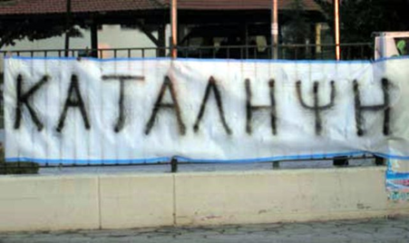

Ημερομηνία: 01 Δεκεμβρίου 2018
Αγρίνιο: Συνελήφθησαν μαθητές γυμνασίου για την κατάληψη του σχολείου τους
Συντάκτης:
Συλλήψεις μαθητών γυμνασίου αλλά και των γονιών τους για παραμέληση εποπτείας ανηλίκων, σημειώθηκαν χθες το απόγευμα στο Αγρίνιο.

Συγκεκριμένα, οι μαθητές συνελήφθησαν γιατί φέρεται να ήταν εκείνοι που υποκίνησαν την κατάληψη του 2ου Γυμνασίου Αγρινίου.
Οι συλλήψεις έγιναν χθες, Παρασκευή, όπου το σχολείο τελούσε για δεύτερη συνεχόμενη ημέρα υπό κατάληψη.
Την προηγούμενη ημέρα, το 2ο Γυμνάσιο όπως και πολλά ακόμη σχολεία της Αιτωλοακαρνανίας αλλά και πανελλαδικά, προχώρησαν σε καταλήψεις με αιχμή το Μακεδονικό, ωστόσο στο 2ο Γυμνάσιο η κατάληψη συνεχίστηκε και την Παρασκευή. Νεότερες πληροφορίες αναφέρουν πως οι καταληψίες μαθητές θεώρησαν ότι η διεύθυνση του σχολείου προέβη σε μηνύσεις σε βάρος τους, κάτι που διαψεύδεται όμως από τη διεύθυνση.
Οι μαθητές που συνελήφθησαν, με την κατηγορία της διατάραξης οικιακής ειρήνης, είναι 14 και 16 ετών ενώ για παραμέληση εποπτείας ανηλίκων συνελήφθησαν και οι γονείς τους, ενώ αναζητείται και ένας ακόμη μαθητής 14 ετών για τον ίδιο λόγο καθώς και ο γονέας του.
Σύμφωνα με τη διεύθυνση του σχολείου, ουδέποτε υπεβλήθησαν μηνύσεις κατά μαθητών και οι Αρχές λειτούργησαν αυτεπάγγελτα, με τη διεύθυνση να καλείται απλά να δώσει κατάθεση επί του θέματος.
Πηγή: www.agriniopress.gr